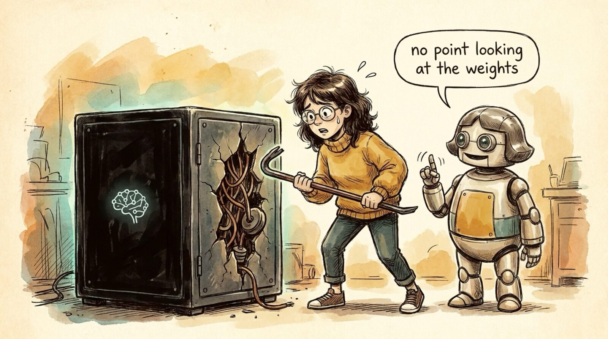

<section id="r06" data-transition="fade" style="background:#F5EEE0;color:#222222;font-family:Arial, Helvetica, sans-serif;padding:0;display:flex;flex-direction:column">

<aside>Ship it like an ML model. Nobody reviews a model's weights -- they measure outputs for inputs. AI code is the same black box: judge behavior, not source.</aside>
</section>
